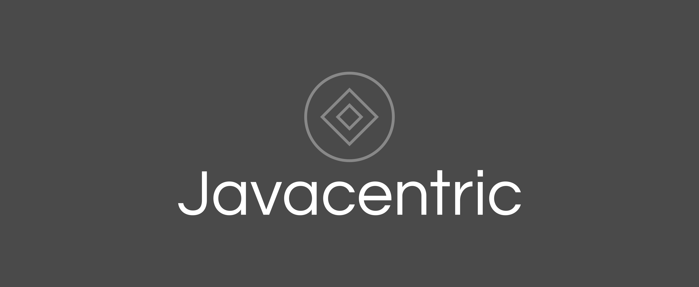

03 September 2023

Javacentric.org is the brainchild of a passionate individual dedicated to exploring and mastering Java technologies. With an unwavering focus on Java and its extensive ecosystem, this single-person organization serves as a wellspring of knowledge for developers, enthusiasts, and industry professionals striving for excellence in Java development.
Mission
Javacentric.org's mission revolves around empowering Java developers with comprehensive insights, tutorials, and resources that facilitate a profound understanding of Java technologies. The commitment to fostering knowledge-sharing and facilitating collaboration enables individuals to harness Java's full potential for building robust and innovative solutions.
Key Features
- Java Technology Deep Dive: Javacentric.org comprehensively covers a diverse array of Java technologies, from foundational concepts to advanced frameworks. Lucid explanations, practical use cases, and hands-on tutorials guide developers through various Java components.
- Leveraging Native Components: A core aspect of the mission is exploring native components available in Java to enable seamless extendability. Javacentric.org delves into libraries, APIs, and tools that empower developers to build modular and scalable applications, capitalizing on Java's inherent capabilities.
- In-Depth Tutorials: This organization offers step-by-step tutorials that navigate developers through real-world scenarios. From designing RESTful APIs to crafting graphical user interfaces, these tutorials equip developers to implement intricate functionalities using Java technologies effectively.
- Open Source Contributions: Javacentric.org, as a single-person initiative, is an avid supporter of the open-source movement. The organization actively develops and shares open-source programs, fostering a collaborative atmosphere where developers can leverage, contribute to, and learn from real-world projects.
- Continuous Technological Updates: Staying attuned to the rapidly evolving Java landscape is pivotal. Javacentric.org ensures developers stay well-informed about the latest trends, updates, and breakthroughs in the Java ecosystem, equipping them to overcome modern development challenges.
- Expert Insights: The organization benefits from the contributions of accomplished Java developers and industry experts, who regularly provide articles, tutorials, and insights. Their proficiency guarantees that the content offered is accurate, pertinent, and valuable to developers of varying skill levels.
Join the Javacentric Movement
Whether you're an adept Java developer or embarking on your journey, Javacentric.org, as a single-person endeavor, welcomes you to immerse yourself in its world. Explore the depths of Java, harness the potential of native components for extendability, and engage with open-source programs that exemplify innovation. With Javacentric.org as your compass, you'll be primed to shape the trajectory of Java development, crafting exceptional solutions that redefine what's achievable.